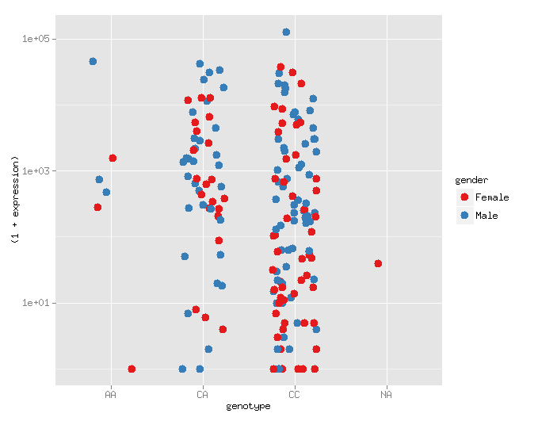

| Class date: | 2015 Feb 19 Thurs |
|---|---|
| Last updated: | March 06, 2015 |
| Class date: | 2015 Feb 19 Thurs |
|---|---|
| Last updated: | March 06, 2015 |
You can access html and images via the web if you:
Create a public_html directory in your $HOME:
$ mkdir $HOME/public_html
Copy content into the public_html directory.
Make sure that permissions of your $HOME are accessible by all:
$ chmod 755 $HOME
Access tesla on campus, or via VPN at the URL:
http://amc-tesla/~username
http://amc-tesla.ucdenver.pvt/~username
The data file we will use is:
/vol1/opt/data/expr-geno-covs.txt
Copy this to a working directory e.g. $HOME/class/class-8
RStudio is a useful interface for R, encapsulates the R prompt, data views and plotting in a single User Interface.
Navigate to http://amc-sandbox.ucdenver.pvt/rstudio and enter your tesla credentials.
Note you need to use VPN if you are off campus.
The main function for loading data is read.delim():
# dfx is a data.frame. look at it with ``summary`` and ``head``
> dfx <- read.delim('lamina.bed')
> is.data.frame(dfx)
If the column names are specified in a header line (begins with #), then you can load them as the column names with:
# this uses the names in the comment line as header names
> dfx <- read.delim('lamina.bed', header=TRUE)
You can also specify headers explicitly with:
> bedfilename <- '/vol1/opt/data/lamina.bed'
> colnames <- c('chrom','start','end','name','score','strand')
> dfx <- read.delim(bedfilename, col.names=colnames)
df is short for data frame, the basic R data structure <- is the R assignment operator, can also use =
> df <- read.delim('expr-geno-covs.txt')
> summary(df)
> head(df)
> head(df$expression)
The most common ways to read in data in R are:
read.csv('file.csv')
read.delim('file.txt')
These take common arguments. You can get help on a function in R with:
?read.delim
?head
The read() functions load a data.frame. In a data.frame, everything is read into memory.
Access the column data with the $ character:
> dfx$chrom
And some functions allow you to refer to columns by name:
> subset(dfx, chrom == 'chr1')
There are several data sets that are built-in to R, including:
> mtcars # Motor Trend Cars Road Tests
> baseball # in ``libarary(plyr)``
# see all built-in data sets
> library(help = "datasets")
> print("hello world")
> library(ggplot2)
# or
> library('ggplot2')
get/set working directory
> getwd() # print
> setwd('C:\whatever\path\') # on windows
> setwd('/vol1/opt/data/') # on linux
Open up a new R Script with File --> New File --> R Script. You should see a new editor window open in the top left.
You can write a simple R script like:
plot(rnorm(1000))
And then save the file as plot.R.
You can then highlight all of the lines, or just select the plot line, and run that portion of the program by presseing the Run button in the window, or with <Cmd>-<Return> on Macs and <Ctrl>-<Return> on Windows.
We will learn to use it to create plots like this
library(ggplot2)
dfx <- read.delim('expr-geno-covs.txt')
ggplot(dfx, aes(x=genotype, y=expression)) +
geom_point()
aes() stands for aesthetics, which specifies the the coordinates, colors, size, etc from these columns in the data.frame.
aes(x=genotype, y=expression, color=gender)
geom_point() means plot these as points, could be geom_line() or a number of other geoms.
Use google to find how to change the y-scale on this plot to log10
library(ggplot2)
dfx = read.delim('expr-geno-covs.txt')
ggplot(dfx, aes(x=genotype, y=expression)) +
geom_point()
library(ggplot2)
dfx <- read.delim('expr-geno-covs.txt')
ggplot(dfx, aes(x=genotype, y=expression)) +
geom_point() +
scale_y_log10()
You can find a lot of info for ggplot2 with some googling.
The ggplot2 docs are very good: http://docs.ggplot2.org/current/
Look at the geom_point() documentation and change the color of the plot above so that males and females are color'ed differently.
In a data.frame, we read everything into memory
One of the simplest things to do in R, without ggplot is to look at a histogram of your data:
hist(dfx$expression)
# or
hist(log(dfx$expression))
You can make these look a lot nicer with ggplot2.
hist() does not work with ggplot, you'll have to use the ggplot2 machinery for that:
gp <- ggplot(dfx, aex(x=log10(expression))
gp + geom_histgram()
Try to figure out how to overlay a density plot with geom_density().
You can also make effective separate visualizations with facet_grid() and facet_wrap(). You need to specify a formula to determine how to separate:
gp <- ggplot(df, aes(x=genotype, y=expression)) + geom_point()
# separate by gender
gp + facet_grid(~ gender)
# separate by gender and condition
gp + facet_grid(condition ~ gender)